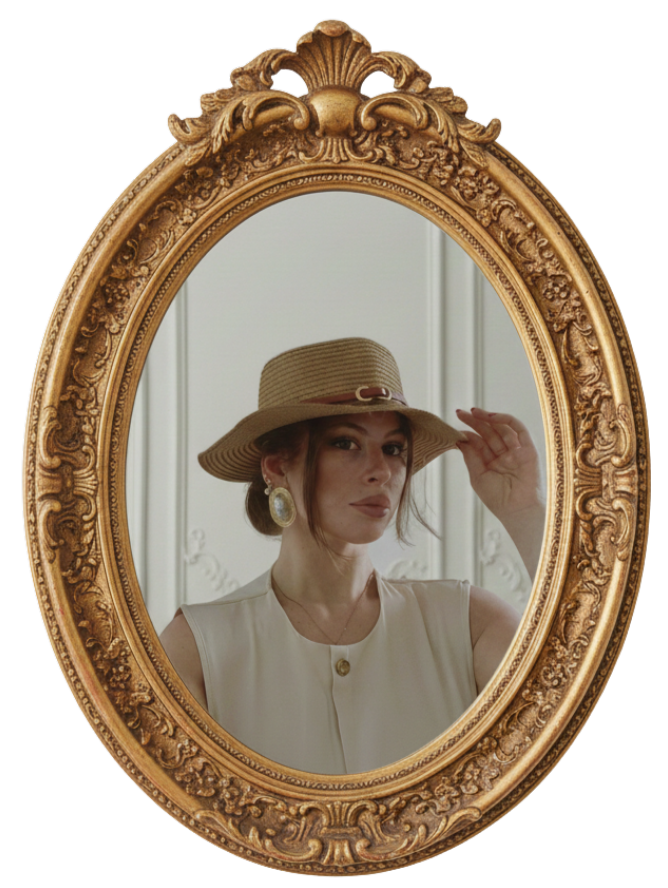
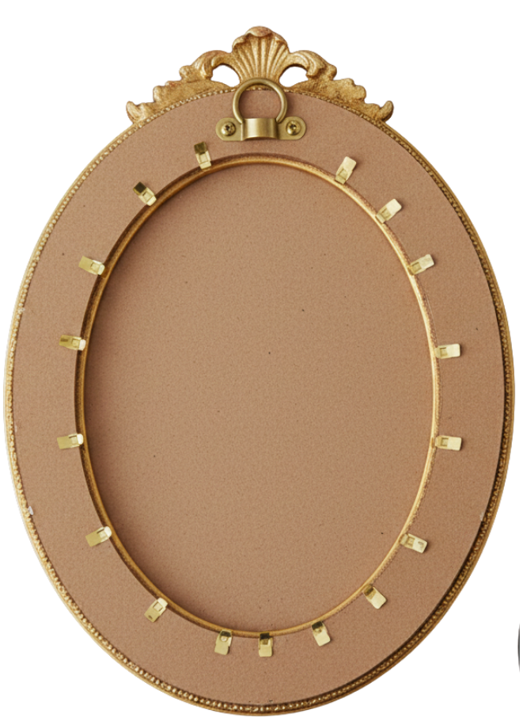

<div class="aboutmeFrame">
  <div class="frame-flip" [class.flipped]="flipped">
    <!-- fronte -->
    <div class="frame-face front">
      
    </div>
    <!-- retro -->
    <div class="frame-face back">
      
      <div class="retro-text" #retroText>
        <h2>Chi Sono</h2>
        <div>
          <h5>
            C'è chi vede il codice come una gabbia di logica e chi vede l'arte
            <br />
            come pura astrazione. Io non ho mai saputo scegliere, così ho deciso
            di abitare nel mezzo.
          </h5>
          <h6>Il mio percorso è un viaggio tra opposti:</h6>
        </div>
        <div>
          <p class="about-me-title">> L'Estetica e la Miniatura:</p>
          <p class="about-me-description">
            Prima del codice, c’erano i pennelli. Ho studiato Estetica per
            insegnarla, poi mi sono dedicata al micro-realismo, trasformando
            piccoli pezzi di plastica in tele da disegno.
          </p>
        </div>
        <div>
          <p class="about-me-title">> La Logica e il rigore:</p>
          <p class="about-me-description">
            per quasi 4 anni ho lavorato per una banca come Java Developer
            (Java, MySQL, Angular). Precisione, database enormi, sicurezza. Qui
            ho applicato quella stessa precisione a sistemi enterprise.
          </p>
        </div>
        <div>
          <p class="about-me-title">> L'Avventura:</p>
          <p class="about-me-description">
            Un salto verso l'ignoto che mi ha portata a vivere in Malesia, nel
            Sud-est asiatico. Qui, come tecnico IT, ho guardato "sotto il
            cofano" del software e delle infrastrutture che lo sviluppo spesso
            dà per scontate: licenze, driver, configurazioni di rete, accessi,
            autenticazioni... ho imparato a risolvere problemi in tempo reale,
            gestendo una media di 40 ticket giornalieri.
          </p>
        </div>
        <div>
          <p>Volevo insegnare l'arte, poi ho capito che potevo costruirla.</p>
          <p>
            Oggi sono una Creative Developer che usa Front-end e Back-End per
            creare esperienze che non si limitano a funzionare, ma che lasciano
            il ricordo.
          </p>
        </div>
        <div>
          <p>Perché questo sito è una sorta di Escape Room?</p>
          <p>
            Perche' mi piace l’idea che per conoscermi tu debba interagire con i
            <br />miei oggetti: accendere una TV, lanciare un foglio da una
            macchina da scrivere, o far ruotare un quadro.
          </p>
        </div>
        <div>
          C’è una linea sottile che unisce un volto dipinto su una superficie di
          pochi millimetri <br />
          e un’architettura software: l’ossessione per il dettaglio.
        </div>
        <div>
          <p>
            Se sei arrivato fin qui esplorando la mia stanza, <br />hai capito
            che non mi accontento delle soluzioni standard.
          </p>
          <p>Costruiamo qualcosa di solido insieme?</p>
        </div>
      </div>
      <button (click)="CloseAboutMe()">Chiudi</button>
    </div>
  </div>
</div>
